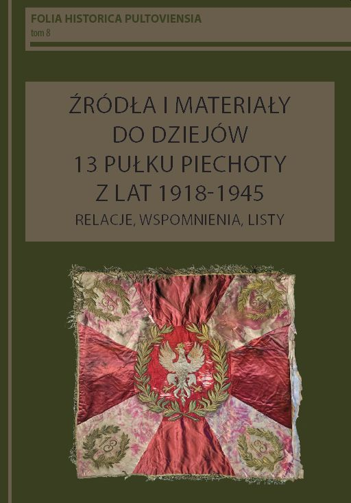

Źródła i materiały do dziejów 13 Pułku Piechoty z lat 1918-1945. Relacje, wspomnienia, listy
oprac. Artur Samsel, Michał Filip Świdwa, Pułtusk 2024, ss. 302.
* Cena 50 zł
Ósmy tom serii wydawniczej Folia Historica Pultoviensia został dedykowany Wacławowi Gołowiczowi, żołnierzowi 13 PP i jego powojennemu kronikarzowi.
Na tekst składają się relacje zebrane przez W. Gołowicza, obszerne wspomnienie o służbie w pułku por./mjr Bronisława Petrycha, instrukcje szkolenia w pułtuskim garnizonie.